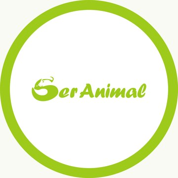
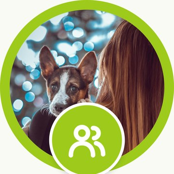
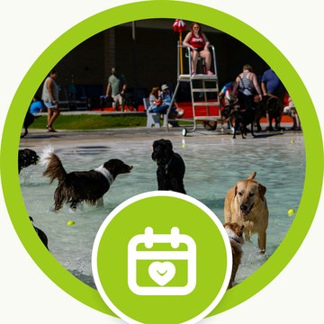
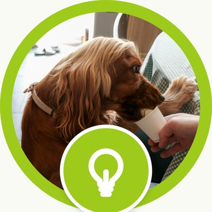
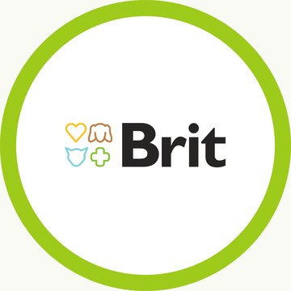
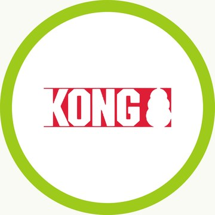
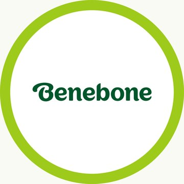
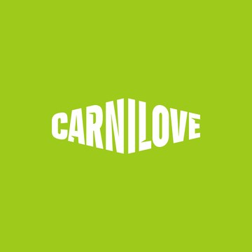
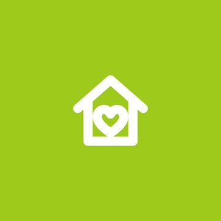

<title>Ser Animal en Instagram</title>
<meta name="claude:viewport-fit-sides" content="cover">
<link rel="preconnect" href="https://fonts.googleapis.com">
<link rel="preconnect" href="https://fonts.gstatic.com" crossorigin>
<link rel="stylesheet" href="https://fonts.googleapis.com/css2?family=DM+Sans:opsz,wght@9..40,400;9..40,500;9..40,700&family=Nunito:wght@800;900&display=swap">
<style>
  /* Guía de marca: bandas a lo ancho (verde, superficie, oscuro) con contenido centrado a 1120 px. */
  :root {
    --verde: #9ECA1B;
    --verde-claro: #CADC8A;
    --verde-hoja: #4C7300;
    --tinta: #253027;
    --gris: #444D45;
    --fondo: #F8FAF4;
    --papel: #FFFFFF;
    --borde: #E5E9DE;
    --suave: #EEF2E6;
    --sobre-verde: #253027;
    --display: "Nunito", "Arial Rounded MT Bold", system-ui, sans-serif;
    --texto: "DM Sans", system-ui, -apple-system, "Segoe UI", sans-serif;
    /* Maqueta del teléfono: siempre en claro, como la app de Instagram por defecto. */
    --ig-bg: #FFFFFF;
    --ig-tinta: #0C1014;
    --ig-gris: #737373;
    --ig-borde: #DBDBDB;
    --ig-boton: #EFEFEF;
  }
  @media (prefers-color-scheme: dark) {
    :root:not([data-theme="light"]) {
      --tinta: #E9F0DC; --gris: #B5C0AE; --fondo: #161D17; --papel: #1F2820; --borde: #33402F;
      --suave: #243024; --verde-hoja: #B6DA55; color-scheme: dark;
    }
  }
  :root[data-theme="dark"] {
    --tinta: #E9F0DC; --gris: #B5C0AE; --fondo: #161D17; --papel: #1F2820; --borde: #33402F;
    --suave: #243024; --verde-hoja: #B6DA55; color-scheme: dark;
  }
  body { background: var(--fondo); color: var(--tinta); font: 400 16px/1.55 var(--texto); }
  * { box-sizing: border-box; }
  img, video { max-width: 100%; display: block; }
  h1, h2, h3 { font-family: var(--display); font-weight: 900; line-height: 1.05; letter-spacing: -0.02em; margin: 0; text-wrap: balance; }
  p { margin: 0; }
  a { color: var(--verde-hoja); }
  code { font: 500 0.88em ui-monospace, "SF Mono", Menlo, monospace; background: var(--suave); border-radius: 6px; padding: 1px 6px; overflow-wrap: anywhere; }
  .banda { padding-left: max(16px, env(safe-area-inset-left, 0px)); padding-right: max(16px, env(safe-area-inset-right, 0px)); }
  .ancho { max-width: 1120px; margin: 0 auto; }
  .seccion { padding-block: 72px; }
  .seccion.papel { background: var(--papel); border-block: 1px solid var(--borde); }
  .etiqueta { font: 700 12px/1 var(--texto); letter-spacing: 0.14em; text-transform: uppercase; color: var(--verde-hoja); }
  .titulo-seccion { display: grid; gap: 10px; margin-bottom: 36px; max-width: 64ch; }
  .titulo-seccion h2 { font-size: clamp(32px, 5vw, 52px); }
  .titulo-seccion p { color: var(--gris); font-size: 17px; }

  /* Portada */
  .portada { background: var(--verde); color: var(--sobre-verde); }
  .portada .ancho { padding-block: 56px 64px; display: grid; gap: 28px; }
  .portada img.logo { width: min(320px, 70%); }
  .portada h1 { font-size: clamp(44px, 8vw, 96px); max-width: 12ch; }
  .portada p { font-size: 19px; max-width: 56ch; }
  .indice { display: flex; flex-wrap: wrap; gap: 8px; }
  .indice a { color: var(--sobre-verde); background: rgba(255, 255, 255, 0.55); text-decoration: none; font-weight: 700; font-size: 14px; padding: 9px 16px; border-radius: 999px; }
  .indice a:hover, .indice a:focus-visible { background: #fff; outline: none; }

  /* Perfil */
  .perfil { display: grid; grid-template-columns: minmax(0, 400px) minmax(0, 1fr); gap: 56px; align-items: start; }
  .telefono { background: var(--ig-bg); color: var(--ig-tinta); border-radius: 44px; border: 10px solid #1B1F1C; box-shadow: 0 30px 60px rgba(20, 30, 20, 0.22); overflow: hidden; font-family: -apple-system, "Segoe UI", system-ui, sans-serif; font-size: 13px; }
  .tel-barra { display: flex; justify-content: space-between; align-items: center; padding: 14px 18px 6px; font-weight: 700; font-size: 17px; }
  .tel-barra .verif { display: inline-grid; place-items: center; width: 15px; height: 15px; border-radius: 50%; background: #0095F6; color: #fff; font-size: 10px; margin-left: 4px; vertical-align: 1px; }
  .tel-cabecera { display: grid; grid-template-columns: 82px 1fr; gap: 18px; align-items: center; padding: 8px 16px; }
  .avatar { width: 82px; height: 82px; border-radius: 50%; background: var(--verde); display: grid; place-items: center; }
  .avatar img { width: 52px; }
  .stats { display: grid; grid-template-columns: repeat(3, 1fr); text-align: center; line-height: 1.2; }
  .stats b { display: block; font-size: 15px; }
  .stats span { color: var(--ig-tinta); font-size: 12px; }
  .bio { padding: 4px 16px 10px; display: grid; gap: 1px; line-height: 1.35; }
  .bio .nombre { font-weight: 700; }
  .bio .categoria { color: var(--ig-gris); }
  .bio .enlace { color: #00376B; font-weight: 600; }
  .tel-botones { display: grid; grid-template-columns: 1fr 1fr 1fr; gap: 6px; padding: 0 16px 12px; }
  .tel-botones span { background: var(--ig-boton); border-radius: 8px; text-align: center; padding: 7px 0; font-weight: 600; }
  .destacadas { display: flex; gap: 12px; padding: 4px 16px 14px; overflow-x: auto; }
  .destacada { flex: none; width: 62px; text-align: center; font-size: 11px; }
  .destacada .circulo { width: 62px; height: 62px; border-radius: 50%; border: 1px solid var(--ig-borde); padding: 3px; margin-bottom: 4px; }
  .destacada .circulo div { width: 100%; height: 100%; border-radius: 50%; overflow: hidden; display: grid; place-items: center; background: #F8FAF4; border: 2px solid var(--verde); }
  .destacada .circulo div.relleno { background: var(--verde); border-color: var(--verde); }
  .destacada img { width: 120%; max-width: none; }
  .destacada .circulo div.relleno img { width: 44%; }
  .tel-pestanas { display: grid; grid-template-columns: repeat(3, 1fr); border-top: 1px solid var(--ig-borde); }
  .tel-pestanas span { text-align: center; padding: 9px 0; color: var(--ig-gris); }
  .tel-pestanas span.activa { color: var(--ig-tinta); border-bottom: 1.5px solid var(--ig-tinta); }
  .grilla { display: grid; grid-template-columns: repeat(3, 1fr); gap: 2px; }
  .grilla img { width: 100%; aspect-ratio: 3 / 4; object-fit: cover; }

  .reglas { display: grid; gap: 28px; min-width: 0; }
  .regla { display: grid; gap: 8px; }
  .regla h3 { font-size: 24px; }
  .regla p, .regla li { color: var(--gris); }
  .regla ul { margin: 0; padding-left: 20px; display: grid; gap: 4px; }
  .copia { background: var(--papel); border: 1px solid var(--borde); border-radius: 16px; padding: 16px 18px; display: grid; gap: 10px; min-width: 0; }
  .copia pre { margin: 0; white-space: pre-wrap; font: 500 15px/1.5 var(--texto); color: var(--tinta); }
  .copia button { justify-self: start; font: 700 14px var(--texto); background: var(--tinta); color: var(--fondo); border: 0; border-radius: 999px; padding: 9px 18px; cursor: pointer; }
  .copia button:focus-visible { outline: 3px solid var(--verde); outline-offset: 2px; }
  .ritmo { display: grid; grid-template-columns: repeat(3, minmax(0, 1fr)); gap: 6px; max-width: 360px; }
  .ritmo span { font: 700 12px var(--texto); text-align: center; padding: 10px 4px; border-radius: 10px; background: var(--suave); color: var(--tinta); }
  .ritmo span.v { background: var(--verde); color: var(--sobre-verde); }

  /* Reglas de oro */
  .oro { display: grid; grid-template-columns: repeat(4, minmax(0, 1fr)); gap: 14px; }
  .oro article { background: var(--papel); border: 1px solid var(--borde); border-radius: 16px; padding: 20px; display: grid; gap: 8px; align-content: start; }
  .oro .num { width: 34px; height: 34px; border-radius: 50%; background: var(--verde); color: var(--sobre-verde); display: grid; place-items: center; font: 900 16px var(--display); }
  .oro h3 { font-size: 21px; }
  .oro p { color: var(--gris); font-size: 15px; }

  /* Pilares */
  .pilares { display: grid; grid-template-columns: repeat(4, minmax(0, 1fr)); gap: 16px; }
  .pilar { background: var(--fondo); border: 1px solid var(--borde); border-radius: 28px; overflow: hidden; display: grid; grid-template-rows: auto 1fr; }
  .pilar img { width: 100%; aspect-ratio: 4 / 5; object-fit: cover; }
  .pilar div { padding: 18px 20px 22px; display: grid; gap: 8px; align-content: start; }
  .pilar h3 { font-size: 24px; }
  .pilar .frec { font: 700 13px var(--texto); color: var(--verde-hoja); }
  .pilar p { color: var(--gris); font-size: 15px; }
  .ejemplo { margin-top: 56px; display: grid; gap: 14px; }
  .ejemplo h3 { font-size: 26px; }
  .ejemplo p.nota { color: var(--gris); max-width: 80ch; }
  .tira { display: grid; grid-template-columns: repeat(5, minmax(150px, 1fr)); gap: 10px; overflow-x: auto; padding-bottom: 6px; }
  .tira.cuatro { grid-template-columns: repeat(4, minmax(150px, 1fr)); }
  .tira.tres { grid-template-columns: repeat(3, minmax(150px, 1fr)); max-width: 680px; }
  .tira img { width: 100%; aspect-ratio: 4 / 5; object-fit: cover; border-radius: 10px; }

  /* Animados */
  .animados { display: grid; grid-template-columns: repeat(3, minmax(0, 1fr)); gap: 16px; }
  .animados figure { margin: 0; display: grid; gap: 10px; }
  .animados video { width: 100%; aspect-ratio: 4 / 5; object-fit: cover; border-radius: 16px; background: var(--suave); }
  .animados figcaption { color: var(--gris); font-size: 15px; }
  .animados figcaption b { color: var(--tinta); }
  .lista-anim { margin: 28px 0 0; padding-left: 20px; display: grid; gap: 6px; color: var(--gris); max-width: 80ch; }

  /* Historias */
  .historias { display: grid; grid-template-columns: repeat(6, minmax(130px, 1fr)); gap: 10px; overflow-x: auto; padding-bottom: 6px; }
  .historias img { width: 100%; aspect-ratio: 9 / 16; object-fit: cover; border-radius: 12px; }
  .dos-col { display: grid; grid-template-columns: repeat(2, minmax(0, 1fr)); gap: 28px; margin-top: 32px; }
  .dos-col .regla ul { gap: 6px; }

  /* Calendario */
  .semana { display: grid; grid-template-columns: repeat(7, minmax(0, 1fr)); gap: 8px; }
  .dia { border-radius: 16px; padding: 14px 12px; min-height: 132px; display: grid; align-content: start; gap: 6px; background: var(--papel); border: 1px solid var(--borde); }
  .dia b { font: 900 15px var(--display); }
  .dia span { font-size: 13px; color: var(--gris); line-height: 1.35; }
  .dia.post { background: var(--verde); border-color: var(--verde); }
  .dia.post b, .dia.post span { color: var(--sobre-verde); }
  .nota-semana { margin-top: 18px; color: var(--gris); max-width: 80ch; }

  /* Pasos */
  .pasos { display: grid; grid-template-columns: repeat(3, minmax(0, 1fr)); gap: 14px; counter-reset: paso; margin: 0; padding: 0; list-style: none; }
  .pasos li { background: var(--fondo); border: 1px solid var(--borde); border-radius: 16px; padding: 20px; display: grid; gap: 6px; align-content: start; counter-increment: paso; }
  .pasos li::before { content: counter(paso); font: 900 34px/1 var(--display); color: var(--verde-hoja); }
  .pasos b { font: 900 19px/1.2 var(--display); }
  .pasos span { color: var(--gris); font-size: 15px; }
  .plantilla { margin-top: 32px; display: grid; grid-template-columns: minmax(0, 1fr) minmax(0, 1fr); gap: 28px; align-items: start; }

  /* Brand assets */
  .oscura { background: #253027; color: #F8FAF4; }
  .oscura .etiqueta { color: var(--verde); }
  .oscura .titulo-seccion p { color: #C9D3C2; }
  .carpetas { display: grid; grid-template-columns: repeat(4, minmax(0, 1fr)); gap: 18px; }
  .carpeta { display: grid; gap: 10px; min-width: 0; }
  .carpeta .vista { aspect-ratio: 1; border-radius: 16px; overflow: hidden; display: grid; place-items: center; position: relative; }
  .carpeta .nombre { font: 700 15px var(--texto); display: flex; align-items: center; gap: 8px; color: #F8FAF4; }
  .carpeta .ruta { font: 400 12px/1.3 ui-monospace, "SF Mono", Menlo, monospace; color: #9FAE98; overflow-wrap: anywhere; }
  .v-logo { background: #9ECA1B; } .v-logo img { width: 78%; }
  .v-colores { display: grid !important; grid-template-columns: 2fr 1fr 1fr; place-items: stretch !important; }
  .v-colores div { display: flex; align-items: flex-end; padding: 10px; font: 700 10px var(--texto); letter-spacing: 0.08em; }
  .v-tipo { background: #F8FAF4; color: #253027; display: grid !important; place-content: center; gap: 2px; text-align: center; }
  .v-tipo b { font: 900 76px/0.9 "Nunito", sans-serif; letter-spacing: -0.03em; }
  .v-tipo span { font: 500 14px "DM Sans", sans-serif; }
  .v-ilus { background: #F8FAF4; grid-template-columns: repeat(3, 1fr); padding: 10px; gap: 4px; }
  .v-ilus img { width: 100%; }
  .v-elem { background: #F8FAF4; display: grid !important; grid-template-columns: 1fr 1fr; place-items: center; padding: 14px; gap: 6px; }
  .v-elem img { max-height: 70px; width: auto; }
  .v-anim { background: #FAF8F6; } .v-anim video { width: 100%; height: 100%; object-fit: cover; }
  .v-foto img { width: 100%; height: 100%; object-fit: cover; }
  .v-apli { background: #CADC8A; } .v-apli img { width: 58%; border-radius: 8px; box-shadow: 0 14px 30px rgba(37, 48, 39, 0.25); }

  /* Checklist */
  .checks { display: grid; grid-template-columns: repeat(2, minmax(0, 1fr)); gap: 10px 28px; margin: 0; padding: 0; list-style: none; }
  .checks li { display: grid; grid-template-columns: 26px 1fr; gap: 10px; align-items: start; padding: 12px 0; border-bottom: 1px solid var(--borde); }
  .checks li::before { content: ""; width: 22px; height: 22px; border-radius: 7px; border: 2px solid var(--verde); margin-top: 1px; }
  .pie { padding-block: 40px; color: var(--gris); font-size: 14px; border-top: 1px solid var(--borde); }

  @media (max-width: 900px) {
    .perfil, .plantilla, .dos-col { grid-template-columns: minmax(0, 1fr); }
    .telefono { max-width: 400px; width: 100%; margin: 0 auto; }
    .pilares, .carpetas, .oro, .pasos { grid-template-columns: repeat(2, minmax(0, 1fr)); }
    .semana { grid-template-columns: repeat(2, minmax(0, 1fr)); }
    .checks { grid-template-columns: minmax(0, 1fr); }
  }
  @media (max-width: 620px) {
    .animados { grid-template-columns: minmax(0, 1fr); max-width: 400px; }
  }
  @media (max-width: 520px) {
    .seccion { padding-block: 52px; }
    .pilares, .oro, .pasos { grid-template-columns: minmax(0, 1fr); }
  }

  /* Destacadas con tapa real en la maqueta */
  .destacada .circulo div.tapa { border: 0; background: none; }
  .destacada .circulo div.tapa img { width: 100%; height: 100%; max-width: none; object-fit: cover; }
  .tapas { display: grid; grid-template-columns: repeat(9, minmax(0, 1fr)); gap: 14px; margin-top: 18px; }
  .tapas figure { margin: 0; display: grid; gap: 8px; justify-items: center; text-align: center; }
  .tapas img { width: 100%; max-width: 110px; border-radius: 50%; border: 1px solid var(--borde); padding: 3px; background: var(--papel); }
  .tapas b { font: 700 14px var(--texto); }
  .tapas span { font-size: 12.5px; color: var(--gris); line-height: 1.35; }

  /* Para quién */
  .personas { display: grid; grid-template-columns: repeat(3, minmax(0, 1fr)); gap: 14px; }
  .personas article { background: var(--papel); border: 1px solid var(--borde); border-radius: 16px; padding: 20px; display: grid; gap: 8px; align-content: start; }
  .personas h3 { font-size: 21px; }
  .personas p { color: var(--gris); font-size: 15px; }
  .personas .quiere { font: 700 13px var(--texto); color: var(--verde-hoja); }
  .promesa { margin-top: 28px; background: var(--verde); color: var(--sobre-verde); border-radius: 28px; padding: 28px 32px; display: grid; gap: 8px; }
  .promesa b { font: 900 clamp(22px, 3vw, 30px)/1.15 var(--display); letter-spacing: -0.02em; }
  .promesa p { font-size: 15px; }
  .voz { width: 100%; border-collapse: collapse; margin-top: 28px; font-size: 15px; }
  .voz th, .voz td { text-align: left; vertical-align: top; padding: 12px 14px; border-bottom: 1px solid var(--borde); }
  .voz th { font: 700 12px var(--texto); letter-spacing: 0.1em; text-transform: uppercase; color: var(--verde-hoja); }
  .voz td:first-child { font: 900 17px var(--display); }
  .voz td.si { color: var(--tinta); } .voz td.no { color: var(--gris); text-decoration: line-through; text-decoration-color: var(--borde); }

  /* Calendario del año */
  .anio { display: grid; grid-template-columns: repeat(4, minmax(0, 1fr)); gap: 12px; }
  .mes { background: var(--papel); border: 1px solid var(--borde); border-radius: 16px; padding: 16px; display: grid; gap: 6px; align-content: start; }
  .mes b { font: 900 17px var(--display); }
  .mes span { font-size: 14px; color: var(--gris); line-height: 1.4; }
  .mes .fecha { font: 700 12px var(--texto); color: var(--verde-hoja); }
  .mes.alta { border-color: var(--verde); box-shadow: inset 0 0 0 2px var(--verde); }

  /* Comunidad */
  .respuestas { display: grid; grid-template-columns: repeat(2, minmax(0, 1fr)); gap: 14px; margin-top: 28px; }
  .respuestas article { background: var(--papel); border: 1px solid var(--borde); border-radius: 16px; padding: 18px 20px; display: grid; gap: 8px; align-content: start; }
  .respuestas h4 { margin: 0; font: 900 17px var(--display); }
  .respuestas .caso { font-size: 14px; color: var(--gris); }
  .respuestas .dice { background: var(--suave); border-radius: 12px 12px 12px 4px; padding: 10px 14px; font-size: 15px; }
  .respuestas .dice::before { content: "Se responde: "; font-weight: 700; color: var(--verde-hoja); }

  /* Tablero mensual */
  .tablero { width: 100%; border-collapse: collapse; margin-top: 32px; font-size: 15px; }
  .tablero th, .tablero td { text-align: left; vertical-align: top; padding: 12px 14px; border-bottom: 1px solid var(--borde); }
  .tablero th { font: 700 12px var(--texto); letter-spacing: 0.1em; text-transform: uppercase; color: var(--verde-hoja); }
  .tablero td:first-child { font-weight: 700; }

  @media (max-width: 900px) {
    .tapas { grid-template-columns: repeat(3, minmax(0, 1fr)); }
    .personas, .anio { grid-template-columns: repeat(2, minmax(0, 1fr)); }
    .respuestas { grid-template-columns: minmax(0, 1fr); }
    .voz, .tablero { font-size: 14px; } .voz td, .tablero td, .voz th, .tablero th { padding: 10px 8px; }
  }
  @media (max-width: 520px) {
    .personas, .anio { grid-template-columns: minmax(0, 1fr); }
  }
</style>


<header class="portada banda">
  <div class="ancho">
    
    <h1>Así se ve Ser Animal en Instagram</h1>
    <p>Cómo tiene que verse el perfil, a quién le hablamos, las reglas que no se rompen, de qué hablamos, el calendario del año, cómo se responde, cómo se arma cada post y dónde están los recursos de marca. Los ejemplos son posts reales del lote de noviembre y diciembre, y todo está en el repositorio <b>contenido-redes-sociales</b>.</p>
    <nav class="indice" aria-label="Secciones">
      <a href="#perfil">El perfil</a>
      <a href="#quien">Para quién</a>
      <a href="#oro">Reglas de oro</a>
      <a href="#pilares">Pilares y carruseles</a>
      <a href="#animados">Reels y animados</a>
      <a href="#historias">Historias</a>
      <a href="#semana">La semana</a>
      <a href="#anio">El año</a>
      <a href="#como">Cómo se hace</a>
      <a href="#assets">Brand assets</a>
      <a href="#medir">Cómo saber si funciona</a>
      <a href="#comunidad">Comunidad y mensajes</a>
      <a href="#antes">Antes de publicar</a>
    </nav>
  </div>
</header>

<section class="banda seccion" id="perfil">
  <div class="ancho">
    <div class="titulo-seccion">
      <span class="etiqueta">01 · El perfil</span>
      <h2>La cuenta, de un vistazo</h2>
      <p>Así tiene que verse @seranimal: foto de perfil verde, bio clara, destacadas con anillo verde (los logos de las marcas y fotos reales) y una grilla donde mandan las fotos reales, con mascotas y personas.</p>
    </div>

    <div class="perfil">
      <div class="telefono" aria-label="Maqueta del perfil de Instagram de Ser Animal">
        <div class="tel-barra"><span>seranimal<span class="verif" aria-hidden="true">✓</span></span><span aria-hidden="true">≡</span></div>
        <div class="tel-cabecera">
          <div class="avatar"></div>
          <div class="stats"><div><b>—</b><span>publicaciones</span></div><div><b>—</b><span>seguidores</span></div><div><b>—</b><span>seguidos</span></div></div>
        </div>
        <div class="bio">
          <span class="nombre">Ser Animal · Tienda de mascotas</span>
          <span class="categoria">Tienda de mascotas</span>
          <span>Tienda de mascotas en Uruguay 🐾</span>
          <span>Perros, gatos, roedores, pájaros y peces</span>
          <span>Envío gratis a todo el país desde $1.500</span>
          <span>Pedidos por WhatsApp: 091 380 000</span>
          <span class="enlace">seranimal.com.uy</span>
        </div>
        <div class="tel-botones"><span>Seguir</span><span>Mensaje</span><span>WhatsApp</span></div>
        <div class="destacadas">
          <div class="destacada"><div class="circulo"><div class="tapa"></div></div>Sucursales</div>
          <div class="destacada"><div class="circulo"><div class="tapa"></div></div>Clientes</div>
          <div class="destacada"><div class="circulo"><div class="tapa"></div></div>Eventos</div>
          <div class="destacada"><div class="circulo"><div class="tapa"></div></div>Consejos</div>
          <div class="destacada"><div class="circulo"><div class="tapa"></div></div>Brit</div>
          <div class="destacada"><div class="circulo"><div class="tapa"></div></div>Kong</div>
          <div class="destacada"><div class="circulo"><div class="tapa"></div></div>Benebone</div>
          <div class="destacada"><div class="circulo"><div class="tapa"></div></div>Carnilove</div>
          <div class="destacada"><div class="circulo"><div class="tapa"></div></div>Adopciones</div>
        </div>
        <div class="tel-pestanas"><span class="activa">▦</span><span>▷</span><span>◫</span></div>
        <div class="grilla">
          
          
          
          
          
          
          
          
          
        </div>
      </div>

      <div class="reglas">
        <div class="regla">
          <h3>Bio</h3>
          <p>Qué es, para quién y cómo llega, en los primeros segundos. Sin frases vacías. Máximo 150 caracteres. «Uruguay» y «tienda de mascotas» van escritos porque Instagram busca por palabras. El WhatsApp va acá y en el texto de los posteos, nunca en las imágenes.</p>
          <div class="copia">
            <pre id="bio-texto">Tienda de mascotas en Uruguay 🐾
Perros, gatos, roedores, pájaros y peces
Envío gratis a todo el país desde $1.500
Pedidos por WhatsApp: 091 380 000</pre>
            <button type="button" data-copiar="bio-texto">Copiar bio</button>
          </div>
          <ul>
            <li><b>Nombre:</b> «Ser Animal · Tienda de mascotas». El nombre se busca: así aparece al buscar «tienda de mascotas».</li>
            <li><b>Categoría:</b> Tienda de mascotas.</li>
            <li><b>Enlace:</b> seranimal.com.uy.</li>
            <li><b>Foto de perfil:</b> isotipo blanco sobre círculo verde. Nunca el logo completo: en chico no se lee.</li>
          </ul>
        </div>
        <div class="regla">
          <h3>Destacadas</h3>
          <p>Nueve, siempre en este orden: <b>Sucursales, Clientes, Eventos, Consejos, Brit, Kong, Benebone, Carnilove y Adopciones</b>. Todas con el mismo sistema: anillo verde Ser Animal y disco blanco. Las de marcas llevan el logo oficial de la marca; las de temas, una foto real con una insignia verde; Sucursales lleva el logo de Ser Animal (los locales son la marca). Es el único lugar del perfil donde van logos de otras marcas.</p>
        </div>
        <div class="regla">
          <h3>La grilla</h3>
          <ul>
            <li>La base son las portadas con foto real y un texto claro: título sobre foto, globos, panel, enmarcada, cita, número grande, mosaico.</li>
            <li>Nunca dos portadas seguidas con el mismo estilo.</li>
            <li>Se alternan fotos reales y productos: un producto cada dos o tres posts.</li>
            <li>Más personas con sus mascotas, como Petz.</li>
            <li>El perfil recorta las portadas a 3:4: el título y el «Deslizá» van dentro del margen de seguridad.</li>
          </ul>
          <div class="ritmo" aria-label="Estilos de portada de la grilla de ejemplo">
            <span class="v">Título abajo</span><span>Título arriba</span><span class="v">Título abajo</span>
            <span>Título arriba</span><span class="v">Panel</span><span>Cita</span>
            <span class="v">Enmarcada</span><span>Número</span><span class="v">Título arriba</span>
          </div>
        </div>
      </div>
    </div>
    <div class="ejemplo">
      <h3>Las nueve destacadas</h3>
      <p class="nota">Tapas listas en <code>posts/2026-10-destacadas/</code>, en 1080×1080 y 1080×1920. Se cargan desde la galería al editar cada destacada. Lo que va adentro se renueva cada tres meses: una destacada vieja dice menos que ninguna.</p>
      <div class="tapas">
        <figure><b>Sucursales</b><span>Foto de cada local, dirección, horario y cómo llegar. La tapa es el logo: los locales son la marca.</span></figure>
        <figure><b>Clientes</b><span>Fotos y videos que mandan los clientes, con su permiso y su nombre si quieren.</span></figure>
        <figure><b>Eventos</b><span>Jornadas, ferias y actividades de la tienda, antes y después.</span></figure>
        <figure><b>Consejos</b><span>Las historias de consejos, agrupadas: agua, paseos, uñas, pirotecnia.</span></figure>
        <figure><b>Brit</b><span>Las líneas de alimento, para qué mascota es cada una. Sin precios.</span></figure>
        <figure><b>Kong</b><span>Juguetes en uso, cómo rellenarlos y qué tamaño elegir.</span></figure>
        <figure><b>Benebone</b><span>Huesos para morder: sabores, tamaños y para qué perro es cada uno.</span></figure>
        <figure><b>Carnilove</b><span>Alimento sin cereales: variedades y para quién es.</span></figure>
        <figure><b>Adopciones</b><span>Perros y gatos en adopción, con los refugios con los que trabajamos.</span></figure>
      </div>
    </div>
  </div>
</section>

<section class="banda seccion papel" id="quien">
  <div class="ancho">
    <div class="titulo-seccion">
      <span class="etiqueta">02 · Para quién</span>
      <h2>A quién le hablamos y qué prometemos</h2>
      <p>Una cuenta «para todos» no convierte a nadie. Estas tres personas son hipótesis de trabajo: se ajustan cada mes con las estadísticas de Instagram y con lo que preguntan por WhatsApp.</p>
    </div>
    <div class="personas">
      <article><h3>La que lo cuida como a un hijo</h3><span class="quiere">Quiere saber si lo está haciendo bien</span><p>Perro o gato en apartamento, en Montevideo. Compra online y busca consejos claros, sin sermones. Es la que más guarda y manda los «¿Sabías que…?» y los consejos.</p></article>
      <article><h3>La familia con patio</h3><span class="quiere">Quiere que le llegue a casa</span><p>Perro grande, muchas veces en el interior del país. Compra alimento y accesorios con regularidad y valora el envío gratis a todo el país y el pedido programado.</p></article>
      <article><h3>El que recién empieza</h3><span class="quiere">Quiere una lista de lo que necesita</span><p>Cachorro o gato nuevo en casa, primera mascota. Busca «primeros días», qué comprar y cómo presentarlo. Las fichas de producto y los consejos de inicio son para él.</p></article>
    </div>
    <div class="promesa">
      <b>Todo lo que tu mascota necesita, elegido por gente que sabe, con envío a todo el país.</b>
      <p>Es lo que cada post tiene que dejar claro sin decirlo: sabemos de mascotas, lo hacemos fácil y llega a tu casa.</p>
    </div>
    <table class="voz" aria-label="Cómo suena Ser Animal y cómo no">
      <thead><tr><th>Somos</th><th>Así suena</th><th>Así no</th></tr></thead>
      <tbody>
        <tr><td>Cercanos</td><td class="si">«Contanos cómo se llama y qué le gusta».</td><td class="no">«¡Holaaa, amigos peludos!».</td></tr>
        <tr><td>Claros</td><td class="si">«Cepillalo una vez por semana».</td><td class="no">«Se recomienda realizar el cepillado con una frecuencia semanal».</td></tr>
        <tr><td>Concretos</td><td class="si">«Es para perros de hasta 20 kg y llega a todo el país».</td><td class="no">«¡El mejor producto del mercado!».</td></tr>
        <tr><td>Positivos</td><td class="si">«Con agua fresca cerca, el paseo es más lindo para los dos».</td><td class="no">«Si no le das agua, lo estás descuidando».</td></tr>
      </tbody>
    </table>
  </div>
</section>

<section class="banda seccion" id="oro">
  <div class="ancho">
    <div class="titulo-seccion">
      <span class="etiqueta">03 · Reglas de oro</span>
      <h2>Lo que no se rompe nunca</h2>
      <p>Valen para cada post, cada historia y cada animación. Si algo no las cumple, no se publica.</p>
    </div>
    <div class="oro">
      <article><span class="num">1</span><h3>Sin etiquetas</h3><p>La portada es la foto y un texto claro, nada más. Nada de pastillas como «Consejos», «¿Sabías que…?», «En la tienda» o «Aviso».</p></article>
      <article><span class="num">2</span><h3>Sin precios</h3><p>Ni en la imagen ni en el posteo. Los únicos montos son los textos fijos de envíos y pedido programado.</p></article>
      <article><span class="num">3</span><h3>Sin marcas</h3><p>Ni logos ni textos de otras marcas en las fotos: se borran con IA. El producto se nombra por lo que es. Bolsas de alimento no van al feed. La única excepción son las destacadas de marcas, que llevan el logo oficial.</p></article>
      <article><span class="num">4</span><h3>Feed estético</h3><p>Nada de «Pedilo por WhatsApp», teléfonos ni llamados a la venta en las imágenes. El WhatsApp va solo en el texto del posteo.</p></article>
      <article><span class="num">5</span><h3>Siempre en positivo</h3><p>Nunca retar ni juzgar al dueño. Nada de «Cuidalo mejor»: los consejos se dan como ideas, con calma.</p></article>
      <article><span class="num">6</span><h3>HD y nítidas</h3><p>Fotos de 2000 px o más. Se exporta al doble y se reduce. Si una foto se ve borrosa, no se usa.</p></article>
      <article><span class="num">7</span><h3>Caras a la vista</h3><p>Ni el título ni los elementos gráficos tapan la cara del animal ni la de las personas. Si tapan, se cambia el encuadre o la foto.</p></article>
      <article><span class="num">8</span><h3>Una sola flecha</h3><p>Si va el «Deslizá», no se suma otra indicación para deslizar. Los elementos salen siempre de <code>marca/elementos/</code>.</p></article>
    </div>
  </div>
</section>

<section class="banda seccion" id="pilares">
  <div class="ancho">
    <div class="titulo-seccion">
      <span class="etiqueta">04 · Pilares y carruseles</span>
      <h2>De qué hablamos</h2>
      <p>Cuatro temas fijos. Cada post entra en uno; si no entra en ninguno, no va.</p>
    </div>
    <div class="pilares">
      <article class="pilar">
        
        <div><h3>¿Sabías que…?</h3><span class="frec">1 por semana · carrusel</span>
          <p>Curiosidades de cada especie, verificadas. Es lo que más se guarda y se comparte.</p>
          <p><b>Portada:</b> número grande, pregunta en globos o título sobre foto.</p></div>
      </article>
      <article class="pilar">
        
        <div><h3>Consejos</h3><span class="frec">1 por semana · carrusel</span>
          <p>Consejos prácticos y de temporada. Cada dos semanas, uno que termina en el producto que ayuda. Ante síntomas, siempre «consultá a tu veterinario».</p>
          <p><b>Portada:</b> pregunta enmarcada, foto con panel, foto enmarcada o título sobre foto.</p></div>
      </article>
      <article class="pilar">
        
        <div><h3>Productos</h3><span class="frec">1 o 2 por semana</span>
          <p>Productos lindos de seranimal.com.uy, con los datos de su ficha. Se muestran en uso, para inspirar: nunca precios ni «pedilo».</p>
          <p><b>Portada:</b> producto en uso con título sobre foto, panel o enmarcada.</p></div>
      </article>
      <article class="pilar">
        
        <div><h3>La familia Ser Animal</h3><span class="frec">1 por semana</span>
          <p>El vínculo con las mascotas, preguntas para comentar y mascotas de clientes. Pedirles fotos y videos cuando compran, siempre con su permiso.</p>
          <p><b>Portada:</b> cita sobre foto, mosaico de palabras, texto editorial o retrato con nombre.</p></div>
      </article>
    </div>

    <div class="ejemplo">
      <h3>Consejo que termina en producto</h3>
      <p class="nota">Portada con una pregunta, beneficios con íconos, tarjetas con el «cada cuánto», panel con foto y al final la ficha del producto que ayuda. Cada slide con un armado distinto: enseña primero y vende sin decir «comprá».</p>
      <div class="tira">
        
        
        
        
        
      </div>
    </div>
    <div class="ejemplo">
      <h3>Producto (el carrusel preferido)</h3>
      <p class="nota">Portada con el producto en uso, hecha con Nano Banana Pro a partir de la foto real; después la ficha; y una fila de íconos con una foto real que muestra para qué sirve.</p>
      <div class="tira tres">
        
        
        
      </div>
    </div>
    <div class="ejemplo">
      <h3>La ficha de producto</h3>
      <p class="nota">Foto de estudio sobre blanco, sin logos; el nombre por lo que es; una línea que explica para qué sirve; los datos de la web en pastillas; y los colores, si los hay. Sin precio.</p>
      <div class="tira cuatro">
        
        
        
        
      </div>
    </div>
    <div class="ejemplo">
      <h3>¿Sabías que…?</h3>
      <p class="nota">Datos numerados, alternando la foto en tarjeta con el panel y foto para que no se repita el armado. Los datos salen de fuentes veterinarias.</p>
      <div class="tira cuatro">
        
        
        
        
      </div>
    </div>
    <div class="ejemplo">
      <h3>La familia Ser Animal</h3>
      <p class="nota">Fotos con personas y sus mascotas, títulos cortos con una palabra subrayada y un cierre que invita a contar su historia.</p>
      <div class="tira cuatro">
        
        
        
        
      </div>
    </div>
    <div class="ejemplo">
      <h3>Todos los estilos editoriales</h3>
      <p class="nota">Inspirados en Petz: globos blancos con el personaje que se asoma, foto con panel, texto con palabras subrayadas, foto enmarcada, retrato, título sobre foto, cita y mosaico. En el retrato, los nombres y la cita son siempre del cliente y con su permiso.</p>
      <div class="tira">
        
        
        
        
        
      </div>
      <div class="tira cuatro">
        
        
        
        
      </div>
    </div>
  </div>
</section>

<section class="banda seccion papel" id="animados">
  <div class="ancho">
    <div class="titulo-seccion">
      <span class="etiqueta">05 · Reels y animados</span>
      <h2>Los reels traen gente nueva</h2>
      <p>Cada formato tiene su trabajo: los <b>reels</b> llegan a gente que todavía no nos sigue, los <b>carruseles</b> se guardan y las <b>historias</b> cuidan a quienes ya nos siguen. Por eso, cada semana, al menos un reel. La forma más fácil: animar la portada real, con la misma plantilla. 8 segundos, 1080×1350.</p>
    </div>
    <div class="animados">
      <figure>
        <video src="img/anim-ronroneo.mp4" poster="img/anim-ronroneo.jpg" autoplay muted loop playsinline aria-label="Portada animada: ¿Por qué ronronean los gatos?"></video>
        <figcaption><b>Pregunta en globos.</b> Los globos aparecen uno por uno y al final se asoma el personaje.</figcaption>
      </figure>
      <figure>
        <video src="img/anim-lanzador.mp4" poster="img/anim-lanzador.jpg" autoplay muted loop playsinline aria-label="Portada animada: Tirale la pelota sin cansarte"></video>
        <figcaption><b>Título sobre foto.</b> El título sube, se dibuja el subrayado y después aparece el «Deslizá».</figcaption>
      </figure>
      <figure>
        <video src="img/anim-gatonuevo.mp4" poster="img/anim-gatonuevo.jpg" autoplay muted loop playsinline aria-label="Portada animada: Cómo presentar un gato nuevo en casa"></video>
        <figcaption><b>Foto enmarcada.</b> La foto entra y las esquinas del marco se dibujan alrededor.</figcaption>
      </figure>
    </div>
    <div class="dos-col">
      <div class="regla">
        <h3>Para que un reel llegue lejos</h3>
        <ul>
          <li><b>El primer segundo decide.</b> El título se tiene que leer entero en el primer segundo y medio, con la mascota ya en pantalla.</li>
          <li><b>El tema, dicho con palabras.</b> Lo que diría alguien al buscarlo («cepillar al gato», «cama para gato») va en pantalla y en la primera línea del texto.</li>
          <li><b>Música de la biblioteca de Instagram</b>, nunca una canción descargada.</li>
          <li><b>Hecho para Instagram:</b> sin marcas de agua de TikTok ni de otras apps.</li>
          <li><b>Reels de prueba:</b> la opción «Reel de prueba» lo muestra primero a quienes no nos siguen. Sirve para probar una idea sin llenar el perfil.</li>
        </ul>
      </div>
      <div class="regla">
        <h3>Qué más se puede filmar</h3>
        <ul>
          <li>Las portadas animadas, con <code>studio/scripts/animar-portada.cjs</code>, que clona la slide real del Studio y la anima cuadro por cuadro.</li>
          <li>Productos en uso, en video corto: el lanzador tirando la pelota, el gato con el dispensador.</li>
          <li>Videos de mascotas de clientes, siempre con su permiso y con su nombre si lo quieren.</li>
          <li>Un consejo en 10 segundos: la mano en el piso para medir el calor, cómo esconder premios en la alfombra.</li>
        </ul>
      </div>
    </div>
  </div>
</section>

<section class="banda seccion" id="historias">
  <div class="ancho">
    <div class="titulo-seccion">
      <span class="etiqueta">06 · Historias</span>
      <h2>Consejos cortos y mensajes</h2>
      <p>Una o dos por día. Un mensaje que se lee de un vistazo, con una foto real: «Ellos siempre te esperan», «Agua fresca, siempre», «Gracias por cuidarlos tanto».</p>
    </div>
    <div class="historias">
      
      
      
      
      
      
    </div>
    <div class="dos-col">
      <div class="regla">
        <h3>Cómo se ven</h3>
        <ul>
          <li>1080×1920. El texto va entre los 250 px de arriba y los 300 px de abajo, que tapa Instagram.</li>
          <li>Tres formas: título arriba sobre la foto, título abajo con velo oscuro, o panel verde arriba con la foto abajo.</li>
          <li>Una frase corta con una palabra subrayada en verde. Como mucho, una línea más de texto.</li>
          <li>El logo va solo donde hay aire, nunca sobre la cara de nadie ni sobre una foto recargada.</li>
        </ul>
      </div>
      <div class="regla">
        <h3>Qué contar</h3>
        <ul>
          <li><b>Mensajes:</b> el vínculo con su mascota, siempre en positivo.</li>
          <li><b>Consejos de un vistazo:</b> agua, paseos, uñas, chapita, pirotecnia.</li>
          <li><b>Para conversar:</b> encuestas, preguntas y quiz con los stickers de Instagram.</li>
          <li><b>Productos en uso:</b> con mención al post del producto, sin precio.</li>
        </ul>
      </div>
    </div>
  </div>
</section>

<section class="banda seccion papel" id="semana">
  <div class="ancho">
    <div class="titulo-seccion">
      <span class="etiqueta">07 · La semana</span>
      <h2>Ritmo de publicación</h2>
      <p>Cuatro posts por semana y una o dos historias por día. Mejor menos y bien hechos que todos los días a las apuradas.</p>
    </div>
    <div class="semana">
      <div class="dia post"><b>Lunes</b><span>¿Sabías que…?</span></div>
      <div class="dia"><b>Martes</b><span>Historias: un consejo o un mensaje</span></div>
      <div class="dia post"><b>Miércoles</b><span>Productos</span></div>
      <div class="dia"><b>Jueves</b><span>Historias: encuesta o producto en uso</span></div>
      <div class="dia post"><b>Viernes</b><span>Consejos (cada dos semanas, uno que termina en producto)</span></div>
      <div class="dia"><b>Sábado</b><span>Historias: un mensaje</span></div>
      <div class="dia post"><b>Domingo</b><span>La familia Ser Animal</span></div>
    </div>
    <p class="nota-semana">Los temas de temporada se adelantan: el calor y los paseos desde noviembre, la pirotecnia en las semanas antes de Navidad y Año Nuevo, y los viajes en diciembre y enero. Una animación por semana, como reel.</p>
  </div>
</section>

<section class="banda seccion" id="anio">
  <div class="ancho">
    <div class="titulo-seccion">
      <span class="etiqueta">08 · El año</span>
      <h2>Calendario de temporadas</h2>
      <p>Los temas se adelantan un mes: lo que la gente va a necesitar en diciembre se publica en noviembre. Los meses marcados en verde son los de más ventas y más consultas. Las fechas especiales se confirman cada año antes de armar el post.</p>
    </div>
    <div class="anio">
      <div class="mes alta"><b>Enero</b><span>Calor fuerte, playa y viajes. Agua, horarios de paseo, almohadillas. Mascotas que se quedan en casa.</span></div>
      <div class="mes"><b>Febrero</b><span>Sigue el calor. Carnaval y ruido: cómo acompañarlos. Vuelta de las vacaciones.</span></div>
      <div class="mes"><b>Marzo</b><span>Vuelta a la rutina: se queda solo en casa, juguetes para entretenerse. Muda de pelo de otoño: cepillado.</span></div>
      <div class="mes"><b>Abril</b><span>Semana de Turismo: viajar con mascotas. Primeros fríos, camas y mantas.</span></div>
      <div class="mes"><b>Mayo</b><span>Frío y lluvia: abrigos, paseos cortos, secar las patas. Comederos y bebederos para el invierno.</span></div>
      <div class="mes"><b>Junio</b><span>Invierno. Juegos en casa, alfombras de olfateo, huesos para morder. Perros mayores y el frío.</span></div>
      <div class="mes"><b>Julio</b><span>Vacaciones de julio: planes con mascotas y chicos. Gatos de interior: rascadores y escondites.</span></div>
      <div class="mes alta"><b>Agosto</b><span class="fecha">8 · Día Internacional del Gato · 26 · Día Internacional del Perro</span><span>Dos fechas para la familia Ser Animal: fotos de clientes y adopciones.</span></div>
      <div class="mes"><b>Setiembre</b><span>Primavera: pulgas y garrapatas, alergias, más paseos. Muda de pelo de primavera.</span></div>
      <div class="mes alta"><b>Octubre</b><span class="fecha">4 · Día Mundial de los Animales</span><span>Adopciones y refugios. Arranca el calor: bebederos portátiles.</span></div>
      <div class="mes alta"><b>Noviembre</b><span>Calor y paseos. Se adelanta todo lo de diciembre: pirotecnia, viajes, regalos.</span></div>
      <div class="mes alta"><b>Diciembre</b><span>Pirotecnia en las semanas antes de Navidad y Año Nuevo. Viajes. Regalos para mascotas, sin precios.</span></div>
    </div>
  </div>
</section>

<section class="banda seccion papel" id="como">
  <div class="ancho">
    <div class="titulo-seccion">
      <span class="etiqueta">09 · Cómo se hace</span>
      <h2>De la idea al post</h2>
      <p>Cada post va en <code>posts/AAAA-MM-nombre/</code> con las slides, <code>portada.jpg</code>, <code>texto.md</code> y <code>fuente/</code>.</p>
    </div>
    <ol class="pasos">
      <li><b>Tema</b><span>Elegí el pilar del día y una idea útil o linda. Si es producto, uno lindo de seranimal.com.uy, con los datos de su ficha.</span></li>
      <li><b>Fotos</b><span>Reales de Unsplash (se registra la descarga) o hechas con Nano Banana Pro a partir de la foto real: el producto idéntico y sin logos.</span></li>
      <li><b>Armado</b><span>En Ser Animal Studio, siguiendo el Manual de carruseles: portada con foto y texto claro, una idea por slide, cada una con un armado distinto, y la ficha al final.</span></li>
      <li><b>Revisión</b><span>Caras a la vista, nada tapado, una sola flecha, sin precios ni marcas. Si algo roza, se cambia el encuadre.</span></li>
      <li><b>Animación</b><span>Si el post lo pide, la portada animada con el mismo estilo, para reel.</span></li>
      <li><b>Texto del posteo</b><span>Con la plantilla de acá abajo. Si la imagen es de IA, se activa «Contenido de IA».</span></li>
    </ol>
    <div class="plantilla">
      <div class="regla">
        <h3>Plantilla del texto del posteo</h3>
        <p>Qué es, para quién es y cómo llega. Voseo, sin exclamaciones de más. El WhatsApp y los envíos van acá, nunca en la imagen.</p>
        <ul>
          <li><b>Primera línea:</b> el tema con las palabras que usaría alguien al buscarlo. Instagram ahora busca por palabras, no por hashtags.</li>
          <li><b>Una invitación:</b> a guardarlo o a mandárselo a alguien. Lo que se guarda y se manda por mensaje es lo que más lejos llega.</li>
          <li><b>De 3 a 5 hashtags</b> del tema, siempre con #seranimal. Más no suma.</li>
          <li><b>Texto alternativo:</b> en «Configuración avanzada», una frase que describa la foto tal como es.</li>
        </ul>
        <div class="copia">
          <pre id="caption-texto">[Primera línea con el tema, como se buscaría: «cepillar a tu gato»] 🐾

[Qué es, para quién es y para qué sirve, en dos o tres líneas]

[Guardalo para tenerlo a mano · Mandáselo a quien tiene un gato]

Envío gratis a todo el país desde $1.500. En compras menores, $200.
Pedidos y envíos por WhatsApp: 091 380 000.

#seranimal #[especie] #[tema] #uruguay</pre>
          <button type="button" data-copiar="caption-texto">Copiar plantilla</button>
        </div>
      </div>
      <div class="regla">
        <h3>Textos que siempre se escriben igual</h3>
        <ul>
          <li><b>Envíos:</b> Envío gratis a todo el país desde $1.500. En compras menores, $200.</li>
          <li><b>Pedido programado:</b> Te avisamos cuando toque reponer. 5% de descuento desde el 2.º pedido.</li>
          <li><b>WhatsApp:</b> Pedidos y envíos: 091 380 000. Atención al cliente: 092 121 212.</li>
          <li><b>Redes:</b> @seranimal en Instagram, Facebook y TikTok.</li>
          <li>En los consejos de salud: «Ante la duda, consultá a tu veterinario».</li>
        </ul>
      </div>
    </div>
  </div>
</section>

<section class="banda seccion oscura" id="assets">
  <div class="ancho">
    <div class="titulo-seccion">
      <span class="etiqueta">10 · Brand assets</span>
      <h2>Todo en un solo lugar</h2>
      <p>Cada carpeta está en el repositorio. Se usan siempre estos archivos; si hace falta uno nuevo, se suma a la carpeta.</p>
    </div>
    <div class="carpetas">
      <div class="carpeta"><div class="vista v-logo"></div><span class="nombre">Logo</span><span class="ruta">marca/logo/</span></div>
      <div class="carpeta"><div class="vista v-colores" aria-label="Paleta: verde Ser Animal, verde claro y superficie">
        <div style="background:#9ECA1B;color:#253027">9ECA1B</div><div style="background:#CADC8A;color:#253027">CADC8A</div><div style="background:#F8FAF4;color:#253027">F8FAF4</div></div>
        <span class="nombre">Colores</span><span class="ruta">CLAUDE.md · brand board</span></div>
      <div class="carpeta"><div class="vista v-tipo"><b>Aa</b><span>Nunito 900 · DM Sans</span></div><span class="nombre">Tipografía</span><span class="ruta">marca/fuentes/</span></div>
      <div class="carpeta"><div class="vista v-ilus" style="display:grid">
        
        </div>
        <span class="nombre">Ilustraciones</span><span class="ruta">marca/ilustraciones/</span></div>
      <div class="carpeta"><div class="vista v-elem">
        
        </div>
        <span class="nombre">Elementos gráficos</span><span class="ruta">marca/elementos/</span></div>
      <div class="carpeta"><div class="vista v-anim"><video src="img/anim-roedor.mp4" autoplay muted loop playsinline aria-label="Animación del conejo de marca"></video></div><span class="nombre">Animación</span><span class="ruta">marca/animaciones/</span></div>
      <div class="carpeta"><div class="vista v-foto"></div><span class="nombre">Fotografía</span><span class="ruta">marca/fotos/ · Unsplash</span></div>
      <div class="carpeta"><div class="vista v-apli"></div><span class="nombre">Posts y Studio</span><span class="ruta">posts/ · studio/</span></div>
    </div>
  </div>
</section>

<section class="banda seccion papel" id="medir">
  <div class="ancho">
    <div class="titulo-seccion">
      <span class="etiqueta">11 · Cómo saber si funciona</span>
      <h2>Lo que hay que mirar</h2>
      <p>Una vez por mes, en las estadísticas de Instagram. La meta no son los seguidores: es que el contenido se guarde, se mande y traiga gente al perfil y al WhatsApp.</p>
    </div>
    <div class="oro">
      <article><span class="num">1</span><h3>Guardados</h3><p>Dice qué contenido es útil. Los consejos y los «¿Sabías que…?» se miden por esto.</p></article>
      <article><span class="num">2</span><h3>Compartidos</h3><p>Las veces que alguien lo mandó por mensaje. Es lo que más ayuda a llegar a gente nueva.</p></article>
      <article><span class="num">3</span><h3>Alcance a no seguidores</h3><p>Cuánta gente nueva lo vio. Sobre todo en los reels.</p></article>
      <article><span class="num">4</span><h3>Visitas y consultas</h3><p>Visitas al perfil, toques en el enlace y mensajes al WhatsApp. Ahí se ve si el contenido vende.</p></article>
    </div>
    <div class="dos-col">
      <div class="regla">
        <h3>Con lo que salga</h3>
        <ul>
          <li>Repetir los temas y los estilos de portada que más se guardan y se mandan.</li>
          <li>Si un post llega a mucha gente pero casi nadie sigue la cuenta, revisar la bio y las destacadas.</li>
          <li>Si un reel se deja de ver enseguida, mejorar el primer segundo: el título y la foto.</li>
        </ul>
      </div>
      <div class="regla">
        <h3>Responder también cuenta</h3>
        <ul>
          <li>Responder comentarios y mensajes el mismo día, y mejor en la primera hora después de publicar.</li>
          <li>Si alguien pregunta por un producto, se le responde por mensaje con el WhatsApp de pedidos. Nunca con precios en un comentario público.</li>
        </ul>
      </div>
    </div>

    <table class="tablero" aria-label="Tablero mensual">
      <thead><tr><th>Qué se mira</th><th>Dónde</th><th>Qué dice</th><th>Qué se hace</th></tr></thead>
      <tbody>
        <tr><td>Guardados por post</td><td>Estadísticas de cada publicación</td><td>Si el contenido es útil.</td><td>Repetir los temas que más se guardan.</td></tr>
        <tr><td>Compartidos por post</td><td>Estadísticas de cada publicación</td><td>Si la gente lo manda a alguien: es lo que más trae gente nueva.</td><td>Hacer más de ese estilo y de ese tema.</td></tr>
        <tr><td>Alcance a no seguidores</td><td>Estadísticas de cada reel</td><td>Si los reels están llegando lejos.</td><td>Si no sube, mejorar el primer segundo.</td></tr>
        <tr><td>Visitas al perfil y toques al enlace</td><td>Estadísticas de la cuenta, por mes</td><td>Si el contenido manda gente a la bio y a la web.</td><td>Si hay visitas pero pocos toques, revisar la bio.</td></tr>
        <tr><td>Consultas por WhatsApp desde Instagram</td><td>Preguntar «¿cómo nos conociste?» al pedir</td><td>Si todo esto vende.</td><td>Es el número que importa de verdad.</td></tr>
        <tr><td>Seguidores</td><td>Estadísticas de la cuenta</td><td>Solo de referencia: no es la meta.</td><td>Se anota, no se persigue.</td></tr>
      </tbody>
    </table>
    <p class="nota-semana">El primer mes fija la referencia; desde ahí, la meta es que guardados, compartidos y consultas suban mes a mes. Se anota todo en una hoja simple: mes, cada número y qué se cambió.</p>
  </div>
</section>

<section class="banda seccion" id="comunidad">
  <div class="ancho">
    <div class="titulo-seccion">
      <span class="etiqueta">12 · Comunidad y mensajes</span>
      <h2>Responder es parte del contenido</h2>
      <p>Cada comentario y cada mensaje es una venta posible o un cliente que vuelve. Se responde en la primera hora después de publicar y, el resto del día, en horario de tienda. Siempre con el mismo tono de los posts, y usando el nombre de la mascota si lo dicen.</p>
    </div>
    <div class="respuestas">
      <article><h4>Preguntan el precio en un comentario</h4><p class="caso">Nunca se responde con el precio en público.</p><p class="dice">«Te lo pasamos por mensaje 🙂». Y por mensaje: el precio, el envío y el WhatsApp de pedidos.</p></article>
      <article><h4>Un cliente sube una foto con su mascota</h4><p class="caso">Es el contenido más valioso: se pide permiso antes de compartir.</p><p class="dice">«¡Qué lindo! ¿Nos dejás compartirlo en @seranimal? Te etiquetamos».</p></article>
      <article><h4>Una queja o un problema con un pedido</h4><p class="caso">Se responde en público con calma y sin discutir, y se resuelve en privado el mismo día.</p><p class="dice">«Lo lamentamos. Te escribimos por mensaje ahora para resolverlo».</p></article>
      <article><h4>Una pregunta de salud</h4><p class="caso">Se ayuda con lo general y se deriva lo específico.</p><p class="dice">«Suele pasar por [motivo general]. Ante la duda, consultá a tu veterinario: cada caso es distinto».</p></article>
      <article><h4>Un mensaje fuera de horario</h4><p class="caso">Respuesta automática de Instagram con el horario y el WhatsApp.</p><p class="dice">«Gracias por escribir. Atendemos de [horario]. Para pedidos, WhatsApp 091 380 000».</p></article>
      <article><h4>Un comentario ofensivo o spam</h4><p class="caso">No se discute. Se oculta o se borra, y si se repite, se restringe la cuenta.</p><p class="dice">Nada: se oculta y se sigue.</p></article>
    </div>
  </div>
</section>

<section class="banda seccion papel" id="antes">
  <div class="ancho">
    <div class="titulo-seccion">
      <span class="etiqueta">13 · Antes de publicar</span>
      <h2>La última mirada</h2>
    </div>
    <ul class="checks">
      <li>La portada es una foto real o realista, con un texto claro y sin etiquetas.</li>
      <li>Ni el texto ni los elementos tapan caras, y todo está dentro del margen 3:4.</li>
      <li>No aparece ningún precio, ni en la imagen ni en el posteo.</li>
      <li>No se ve ninguna marca: ni logos, ni textos, ni nombres en el título.</li>
      <li>No hay WhatsApp, teléfonos ni «pedilo» en la imagen.</li>
      <li>El tono es positivo: nada que juzgue al dueño.</li>
      <li>Las fotos se ven nítidas en HD.</li>
      <li>Fondos: solo foto, verde o blanco. Tipografías: solo Nunito y DM Sans.</li>
      <li>El estilo de portada no repite el del post anterior.</li>
      <li>Hay una sola indicación para deslizar.</li>
      <li>El texto tiene voseo y no inventa plazos, descuentos ni datos.</li>
      <li>Los datos de salud están verificados con una fuente veterinaria.</li>
      <li>Si hay fotos de IA, se activa «Contenido de IA».</li>
      <li>La primera línea del texto dice de qué se trata, con palabras que alguien buscaría.</li>
      <li>El texto invita a guardar o a mandar, y lleva de 3 a 5 hashtags.</li>
      <li>La foto tiene su texto alternativo.</li>
      <li>En los reels, el título se lee en el primer segundo y medio y la música es de la biblioteca de Instagram.</li>
      <li>Los datos del producto coinciden con su ficha en seranimal.com.uy, y el stock está confirmado.</li>
    </ul>
  </div>
</section>

<footer class="banda pie">
  <div class="ancho">Ser Animal · Guía de Instagram. Fotos de ejemplo de Unsplash (licencia libre); las fotos de producto se hicieron con Nano Banana Pro a partir de las fotos de la tienda. Todos los posts de ejemplo se armaron con las plantillas de Ser Animal Studio.</div>
</footer>

<script>
  // Botones de copiar (bio y plantilla del posteo).
  document.querySelectorAll("[data-copiar]").forEach((boton) => {
    const original = boton.textContent;
    boton.addEventListener("click", async () => {
      const nodo = document.getElementById(boton.dataset.copiar);
      try {
        await navigator.clipboard.writeText(nodo.textContent);
        boton.textContent = "Copiado";
      } catch {
        const r = document.createRange();
        r.selectNodeContents(nodo);
        const s = getSelection(); s.removeAllRanges(); s.addRange(r);
        boton.textContent = "Seleccionado: copialo con Ctrl+C";
      }
      setTimeout(() => (boton.textContent = original), 2000);
    });
  });
  // Con «reducir movimiento», los videos quedan quietos y con controles.
  if (matchMedia("(prefers-reduced-motion: reduce)").matches) {
    document.querySelectorAll("video").forEach((v) => { v.pause(); v.removeAttribute("autoplay"); v.controls = true; });
  }
</script>
